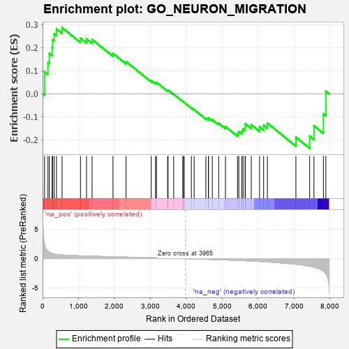
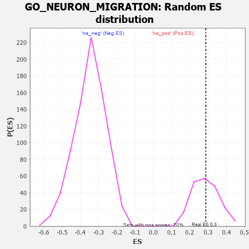

| | | Dataset | 7d |
| Phenotype | NoPhenotypeAvailable |
| Upregulated in class | na_pos |
| GeneSet | GO_NEURON_MIGRATION |
| Enrichment Score (ES) | 0.28698432 |
| Normalized Enrichment Score (NES) | 1.0106645 |
| Nominal p-value | 0.42857143 |
| FDR q-value | 0.7345739 |
| FWER p-Value | 1.0 |
Table: GSEA Results Summary

Fig 1: Enrichment plot: GO_NEURON_MIGRATION
Profile of the Running ES Score & Positions of GeneSet Members on the Rank Ordered List
| PROBE | GENE SYMBOL | GENE_TITLE | RANK IN GENE LIST | RANK METRIC SCORE | RUNNING ES | CORE ENRICHMENT | | 1 | DCLK1 | | | 55 | 2.532 | 0.0957 | Yes |
| 2 | OLIG3 | | | 149 | 1.268 | 0.1354 | Yes |
| 3 | DNER | | | 188 | 1.098 | 0.1751 | Yes |
| 4 | TBX20 | | | 267 | 0.880 | 0.2009 | Yes |
| 5 | SOX14 | | | 278 | 0.859 | 0.2345 | Yes |
| 6 | ARX | | | 322 | 0.782 | 0.2608 | Yes |
| 7 | BAX | | | 387 | 0.711 | 0.2815 | Yes |
| 8 | SRF | | | 542 | 0.615 | 0.2870 | Yes |
| 9 | MEF2C | | | 1054 | 0.473 | 0.2417 | No |
| 10 | ELP3 | | | 1223 | 0.442 | 0.2385 | No |
| 11 | DRGX | | | 1378 | 0.414 | 0.2358 | No |
| 12 | CCR4 | | | 1959 | 0.312 | 0.1753 | No |
| 13 | SCRT1 | | | 2323 | 0.257 | 0.1399 | No |
| 14 | ULK4 | | | 3022 | 0.146 | 0.0578 | No |
| 15 | TLX3 | | | 3140 | 0.131 | 0.0484 | No |
| 16 | PAX6 | | | 3170 | 0.127 | 0.0499 | No |
| 17 | CDK5 | | | 3480 | 0.080 | 0.0141 | No |
| 18 | UNK | | | 3491 | 0.079 | 0.0161 | No |
| 19 | CCKAR | | | 3648 | 0.051 | -0.0015 | No |
| 20 | NIPBL | | | 3900 | 0.010 | -0.0328 | No |
| 21 | NRG3 | | | 3925 | 0.005 | -0.0356 | No |
| 22 | TOP2B | | | 3938 | 0.005 | -0.0369 | No |
| 23 | CRK | | | 4139 | -0.031 | -0.0609 | No |
| 24 | UNC5D | | | 4217 | -0.044 | -0.0688 | No |
| 25 | NTRK2 | | | 4543 | -0.104 | -0.1056 | No |
| 26 | GATA3 | | | 4614 | -0.120 | -0.1095 | No |
| 27 | ATOH1 | | | 4615 | -0.121 | -0.1046 | No |
| 28 | DCX | | | 4721 | -0.143 | -0.1121 | No |
| 29 | MARK2 | | | 4899 | -0.177 | -0.1272 | No |
| 30 | DRD2 | | | 5088 | -0.221 | -0.1420 | No |
| 31 | MDGA1 | | | 5424 | -0.301 | -0.1720 | No |
| 32 | LRIG2 | | | 5460 | -0.310 | -0.1639 | No |
| 33 | FGFR1 | | | 5543 | -0.332 | -0.1608 | No |
| 34 | NDE1 | | | 5578 | -0.339 | -0.1513 | No |
| 35 | ASPM | | | 5637 | -0.358 | -0.1441 | No |
| 36 | LRP12 | | | 5639 | -0.358 | -0.1298 | No |
| 37 | BBS4 | | | 5806 | -0.407 | -0.1342 | No |
| 38 | RAC1 | | | 6036 | -0.484 | -0.1434 | No |
| 39 | FEZF2 | | | 6150 | -0.519 | -0.1367 | No |
| 40 | PEX13 | | | 6255 | -0.557 | -0.1272 | No |
| 41 | MYH10 | | | 7048 | -0.966 | -0.1880 | No |
| 42 | LHX1 | | | 7431 | -1.305 | -0.1832 | No |
| 43 | DCC | | | 7550 | -1.470 | -0.1385 | No |
| 44 | DCDC2 | | | 7813 | -2.099 | -0.0865 | No |
| 45 | FYN | | | 7881 | -2.622 | 0.0114 | No |
Table: GSEA details [plain text format]

Fig 2: GO_NEURON_MIGRATION: Random ES distribution
Gene set null distribution of ES for GO_NEURON_MIGRATION